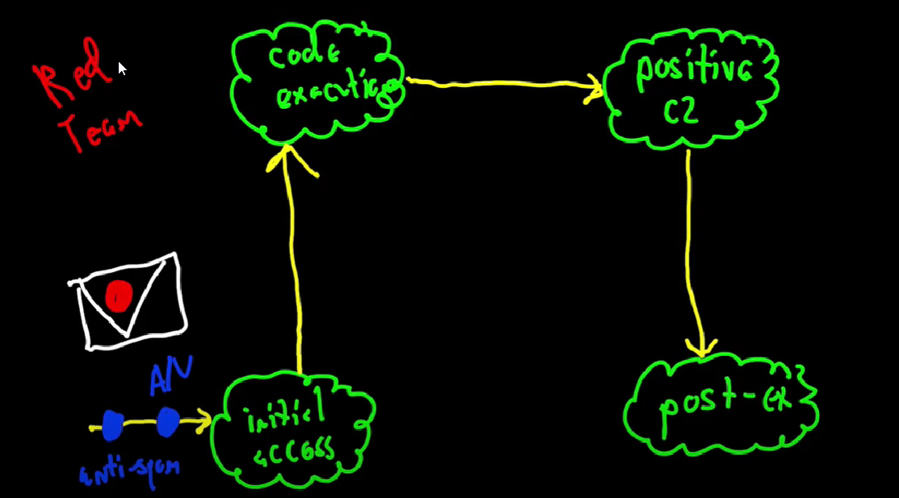

4 Goals in a Target Attack
~~~~this is all with edr products btw hahahah~~~~
initial access - getting an email is not a given- - first you must get past sandboxing or AVs
- - also must contest with aggressive anti spam filters (designed to stop you, like its sometimes hard to even get a normal email through the network)
code execution- you had an intial access stategy that worked- - lets say you got initial access you must still contend with AV/ other Endpoint security (lets say a word doc that drops an exe to disk)
- - next issue Local whitelisting policies
- lets say this all worked so far and the user opened your document
- this documentallows your macro to run, which spawns a process (like rundll32.exe) and injects your payload into it
positive control - probs have a payload running on a compromised enpoint (code execution)- - must still get past firewall
- - network security
post exploitation- you have positive control
all the things getting in the way of positive control